概念了解
检索增强生成（Retrieval-Augmented Generation, RAG） 通过整合外部知识库、扩展了查询上下文，用于弥补大语言模型由于缺乏特定领域知识、实时更新信息等导致模型存在一定局限性，导致引发幻觉现象，即模型生成不准确甚至是虚构的信息。
一个简单RAG系统流程：
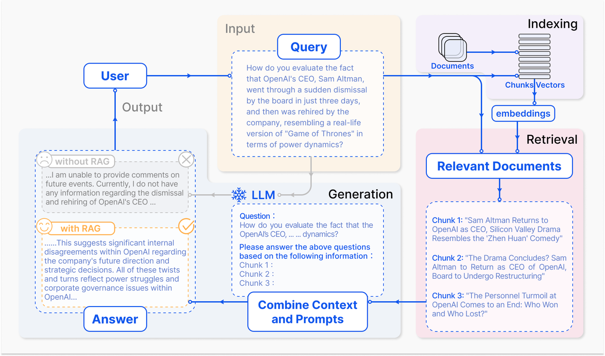
RAG 范式的发展：
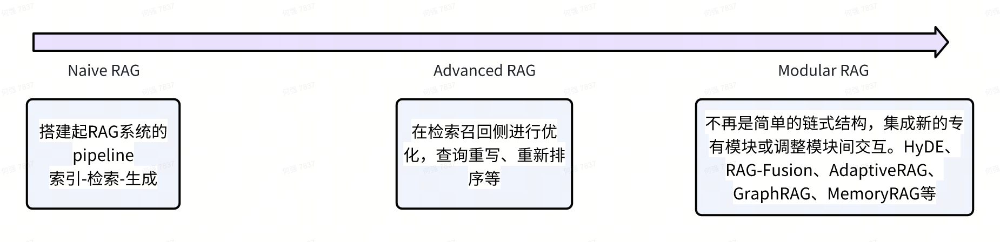
Modular RAG: Transforming RAG Systems into LEGO-like Reconfigurable Frameworks
Prompt vs RAG vs 微调 vs 增量预训练
算力考量：
提示工程 + 检索增强 + 微调 的组合最常用
| 黑盒(调用大模型 API ) | 修改模型参数 | 修改解码器 |
|---|---|---|
| 提示工程 检索增强 | 指令微调 对齐(强化学习) 增量预训练 | 解码策略 |
行业大模型的类型：
| 类型 | 基座模型 | 预训练方法 | 后训练方法 | 行业知识增强 | 提示工程 | 算力需求 |
|---|---|---|---|---|---|---|
| 0类 | 自训 | 从头开始训练 | 微调+对齐 | RAG+KG（知识图谱） | 有 | 千卡规模 |
| 1类 | 开源模型 | 增量预训练 | 微调+对齐 | RAG+KG | 有 | 200卡 |
| 2类 | 开源模型 | 无 | 微调+对齐 | RAG+KG | 有 | 20卡 |
| 3类 | 开源模型 | 无 | 微调 | RAG | 有 | 10卡 |
| 4类 | 开源模型 | 无 | 无 | RAG | 有 | 2卡（推理） |
| 5类 | 闭源模型API | 无 | 无 | RAG | 有 | 0卡 |
| 6类 | 闭源模型API | 无 | 无 | 无 | 有 | 0卡 |
使用场景考量：
第一种情况，模型本身能力足够，只是提问者没有把问题描述清楚，仅仅需要优化提问的技巧，让大模型能够听懂就可以得到正确的答案。这个对应Prompt 工程。
第二种情况，问题已经描述的很清楚了，还是没有得到想要的答案。他可能欠缺一些相关的背景知识。比如一个服务于建筑行业专业咨询师，本身已经具备了建筑行业和咨询行业的方法论，那么现在需要给另外一个建筑公司提供咨询服务，那么他本身仅仅需要一些这个公司的一些背景知识和资料，就可以胜任这个任务。这个就类似RAG。
第三种情况，有了问题清晰的描述、提供了详细的背景知识，也没有解决这个问题，那可能是模型自身缺乏相关领域的认知。比如上面的例子，现在让这名咨询师为金融行业提供咨询服务，那么由于他没有金融行业相关的专业知识，但是他已经具备了咨询行业的一些技能，那么就需要进行一些金融方面的培训等，来提升自己解决金融领域问题的能力和方法论。这个就类似模型微调。
预训练模型已经具有足够的通用知识，侧重于特定任务上对预训练模型进一步训练，使其表现更好。通常使用较小的数据集。
第四种情况，有了问题清晰的描述，提供了详细的背景知识和相关领域知识，还是达不到我们的要求，那么可能是模型自身能力不足。比如，一个不懂汉语的外国人来中国工作，他本身具备工作技能，但是不懂汉语、不懂中国的风土人情，那么就要进行相关领域的学习等。这个就类似增量预训练。
当现有的预训练模型不足以覆盖新的领域时进行的训练，需要引入新的数据或特定领域的数据，通常使用大量的新数据。
RAG 优化方向
分为模型侧和策略侧
模型侧分为：
- 召回模型：向量模型
- 生成模型：大模型 策略侧分为：
- 文档预处理：歧义消除、文档主题划分、增加内容摘要、时间戳等附加信息来丰富知识库等手段来提升知识库文本质量。
- 文档切分：切分技术优化，索引优化，LLMxMapReduce技术
- 查询重写：HyDE(假设文档嵌入)，子问题策略，step-back提示，RAG Fusion(RAG融合)等策略。
- 检索：混合检索（向量检索+关键词检索），自适应检索，迭代检索，递归检索等。
- 生成：召回内容压缩，内容reRank，追问机制等。
RAG框架介绍
ActiveRAG
原文：https://arxiv.org/abs/2402.13547 https://github.com/OpenMatch/ActiveRAG
ActiveRAG 告别了单纯的知识被动接受模式，转而采用主动学习机制。ActiveRAG 相当于一个多代理框架，借助知识建构机制，通过关联已掌握或记忆中的知识，加深对外部知识的理解。同时设计了认知纽带机制，整合思维链与知识建构的双重成果，精准调校LLMs的内在认知机能。
工作流程
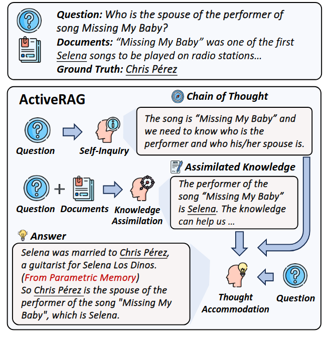
三个步骤：
自我查询（Agent_Q）：生成思维连
知识同化（Agent_KA）：通过学习检索到的文档来加深对知识的理解
思想适应 Thought Accommodation（Agent_TA）：用于产生响应，思维调节方法鼓励 LLMs 反思并纠正基于参数记忆的推理中可能包含的任何事实错误。
Agent_KA 和 Agent_TA 使用不同指令模仿人类不同的学习行为，包括：
锚定指令：通过检索到的文档建立一个基础理解，结合给定问题使LLM扩展其知识。
关联指令：不是被动地学习不熟悉的知识，而是通过与以前学习的信息相关联来对外部知识进行深入理解
推理指令：构建结构化知识以解决问题
反思指令：旨在减轻LLM的幻觉，促使 LLM 进行自我反思，以识别这些检索到的文档中包含的冲突知识。
def create_agent_group(prompt:Prompt):
empty_dict = {}
group = AgentGroup(empty_dict)
key_map = {
'cot': 'reply',
'anchoring': 'unknown_knowledge_reply',
'associate': 'recite_knowledge_reply',
'logician': 'logic_knowledge_reply',
'cognition': 'fact_knowledge_reply',
}
for key, val in prompt.template.items():
group.add_agent(Agent(template=val,key_map=key_map),key)
return group
通过提示词工程定义不同角色Agent：
class Prompt:
template = {
'cot':
"""
To solve the problem, please think and reason step by step, then answer.
Question: {question}
Generation Format:
Reasoning process:
Answer:
""",
'anchoring': [
"""
You are a cognitive scientist, to answer the following question:
{question}
I will provide you with several retrieved passages:
Passages: {passages}
Task Description:
Please extract content that may be unfamiliar to the model from these passages,
which can provide the model with relevant background and unknown knowledge and concepts,
helping it better understand the question. and analyze the role of these contents.
""",
"""
Here is an answer generated by a language model with the reasoning process.
Question: {question}
Answer: {reply}
To provide the language model with relevant background and unknown knowledge and concepts, helping it better understand the question.
I retrieved some knowledge that is may unfamiliar with the model:
Knowledge: {unknown_knowledge_reply}
Please verify the above reasoning process for errors,
then enhance this reasoning process using retrieved knowledge to help it better understand the question,
Afterward, give the answer based on the enhanced reasoning process.
Generation Format:
Knowledge enhanced inference process:
Answer:
"""
],
'associate': [
"""
You are a cognitive scientist, to answer the following question:
{question}
I will provide you with several retrieved passages:
Passages:
{passages}
Task Description:
Please extract foundational knowledge that may be familiar to the model or advanced information beyond the model's already familiar foundational knowledge from these passages, and analyze the role of these contents.
Summarize and consolidate these contents, which should deepen the model's understanding of the question through familiarity with these basic and advanced pieces of information.
This process aims to encourage the model to comprehend the question more thoroughly and expand its knowledge boundaries.
""",
"""
Here is an answer generated by a language model with the reasoning process.
Question: {question}
Answer: {reply}
To deepen the language model's understanding of the question through familiarity with basic and advanced pieces of information.
Encourage the language model to comprehend the question more thoroughly and expand its knowledge boundaries.
I retrieved some foundational knowledge that is familiar to the model or advanced information beyond the language model's already familiar foundational knowledge from these passages.
Knowledge: {recite_knowledge_reply}
Please verify the above reasoning process for errors,
then enhance this reasoning process using retrieved knowledge to deepen the understanding of the question through familiarity with basic and advanced pieces of information,
comprehend the question more thoroughly, and expand the knowledge boundaries.
Afterward, give the answer based on the enhanced reasoning process.
Generation Format:
knowledge enhanced inference process:
Answer:
"""
],
'logician': [
"""
You are a logician, to answer the following question:
{question}
I will provide you with several retrieved passages:
Passages: {passages}
Task Description:
Please extract content from these passages that can help enhance the model's causal reasoning and logical inference abilities.
consolidate these contents, and analyze how the selected information may impact the improvement of the model's causal reasoning and logical inference capabilities.
""",
"""
Here is an answer generated by a language model with the reasoning process.
Question: {question}
Answer: {reply}
To improve the language model's causal reasoning and logical inference capabilities.
I retrieved some knowledge that can help enhance the language model's causal reasoning and logical inference abilities.
Knowledge: {logic_knowledge_reply}
Please verify the above reasoning process for errors,
then enhance this reasoning process using retrieved knowledge to enhance the causal reasoning and logical inference abilities.
Afterward, give the answer based on the enhanced reasoning process.
Generation Format:
knowledge enhanced inference process:
Answer:
"""
],
'cognition': [
"""
Fact-checking refers to the process of confirming the accuracy of a statement or claim through various sources or methods.
This process aims to ensure that statements or claims are based on reliable and verifiable information while eliminating inaccurate or misleading content.
Fact-checking may involve the examination of data, literature, expert opinions, or other trustworthy sources.
In the context of artificial intelligence, model illusion refers to the overconfidence response of the AI.
When a model exhibits an 'illusion' (a tendency to output deceptive data), it indicates that the training data used by the model does not necessarily support the rationality of its outputs.
You are a scientist researching fact-checking and addressing model illusions in artificial intelligence.
To answer the following question:
{question}
I will provide you with several retrieved passages:
Passages: {passages}
Task Description:
Please extract content from these passages that may be contradictory to the model's existing knowledge.
Identify information that, when added, could update the model's knowledge and prevent factual errors, alleviating model illusions.
Note that these passages are retrieved from the most authoritative knowledge repositories, so they are assumed to be correct.
""",
"""
Here is an answer generated by a language model with the reasoning process.
Question: {question}
Answer: {reply}
To update the language model's knowledge and prevent factual errors, alleviating model illusions.
I retrieved some knowledge that may update the language model's knowledge and prevent factual errors, alleviating model illusions
Note that these passages are retrieved from the most authoritative knowledge repositories, so they are assumed to be correct.
Knowledge: {fact_knowledge_reply}
Please verify the above reasoning process for errors,
then enhance this reasoning process using retrieved knowledge to update the language model's knowledge, prevent factual errors and alleviate model illusions.
Afterward, give the answer based on the enhanced reasoning process.
Generation Format:
Knowledge enhanced inference process:
Answer:
"""
]
}
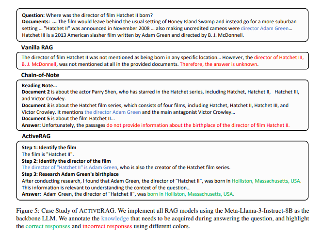
对于“电影《短柄斧 2》的导演出生在哪里？”这个问题，文档中并没有直接给出答案。
Chain-of-Note (笔记链)在分析推理过程中，识别到导演为“亚当·格林”，然而仅仅是依赖于从文档中提取答案，没有对外部知识有更深入的理解，也没有将其与LLMs自身的知识联系起来。
ActiveRAG 通过结构化推理过程，利用知识同化代理生成的知识理解，通过协调外部知识与自身参数记忆的强大能力，给出了正确的答案。
实践验证
修改requirements.txt
openai==1.28.0
aiohttp==3.9.3
numpy==1.24.4
Python 版本使用：3.8.20
知识库：
{"question": "Where was the director of film Hatchet Ii born?", "answers": ["Holliston"],
"passages":
["Document 1 (Title: Hatchet III): trailer was released the day after the film was announced. Hatchet III Hatchet III is a 2013 American slasher film written by Adam Green and directed by B. J. McDonnell. It is the sequel to Green's \"\"Hatchet\"\" and \"\"Hatchet II\"\", and the third installment in the \"\"Hatchet\"\" series. Kane Hodder portrays the main antagonist Victor Crowley for the third time in a row, while Danielle Harris returns to play protagonist Marybeth Dunston. The film picks up immediately after the end of the last film, with Marybeth Dunston (Danielle Harris) blowing off the head of Victor Crowley (Kane Hodder) with a",
"Document 2 (Title: Parry Shen): Parry Shen Parry Shen (born June 26, 1973) is an American actor. Shen's first major acting role was as Ben Manibag in \"\"Better Luck Tomorrow\"\" the film's leading character. He also starred in another Asian American film \"\"Surrogate Valentine\"\". He has since starred in the horror film \"\"Hatchet\"\" and its sequels \"\"Hatchet II\"\", \"\"Hatchet III\"\", and \"\"Victor Crowley\"\". He had a recurring role as Tyler Li in the television series \"\"Tru Calling\"\". He is currently portraying the role of the major recurring character Brad Cooper on \"\"General Hospital\"\". He is also known for his voice acting in the video games",
"Document 3 (Title: Hatchet (film series)): Hatchet (film series) Hatchet is an American slasher film franchise consisting of four films, with a fifth one rumored to be in development. The franchise primarily focuses on urban legend Victor Crowley, as well as his extremely violent kills. The series consists of four films, starting with \"\"Hatchet\"\" and followed by two direct sequels, \"\"Hatchet II\"\" and \"\"Hatchet III\"\", and a soft reboot with \"\"Victor Crowley\"\". A fifth film has been teased by creator Adam Green, which would leave behind the usual setting of Honey Island Swamp and instead go for a more suburban setting. The series features multiple appearances",
"Document 4 (Title: Rileah Vanderbilt): the webseries she co-created, Team Unicorn. She appeared also as herself, along with Ray Wise, Kane Hodder, Tom Holland, Mick Garris and Steven Barton in Adam Green's horror mockumentary film \"\"Digging Up the Marrow\"\". Vanderbilt first met actor/director Adam Green in 2002 at the Rainbow Bar & Grill and married him on June 26, 2010. Rileah Vanderbilt Rileah Elizabeth Vanderbilt (born August 20, 1979) is an American actress and producer. She is one of the founding members of Team Unicorn. Vanderbilt's film debut was \"\"Hatchet\"\", where she played the Young Victor Crowley. She reprised the role in \"\"Hatchet 2\"\" and",
"Document 5 (Title: Hatchet II): twitches. She then returns with Zombie's shotgun and fires the gun into the remains of his head, seemingly killing him. Joel Murray, Mercedes McNab and Joleigh Fioravanti reprise their roles from the first film in minor cameos as Shapiro, Misty and Jenna respectively. Shawn Ashmore and Emma Bell also cameo, with Bell reprising her role as Parker O'Neal from Green's previous film \"\"Frozen\"\" in a scene taking place after the events of that film. Also making uncredited cameos were directors Adam Green, Joe Lynch, Marcus Dunstan, Lloyd Kaufman and Ryan Schifrin. \"\"Hatchet II\"\" was announced in November 2008 when Anchor",
"Document 6 (Title: Hatchet II): Directed by Adam Green, the film takes place ten years after the events of the first three films with Kane Hodder reprising his role as Victor Crowley and Perry Shan reprising his role as \"\"Hatchet III\"\" survivor Andrew Yong. The film will be shown in select U.S. theaters as part of Dark Sky Films' \"\"Victor Crowley Road Show\"\" event in celebration of the first film's ten-year anniversary as well as international film festivals. A teaser trailer was released the day after the film was announced. Hatchet II Hatchet II is a 2010 American slasher film written and directed by Adam",
"Document 7 (Title: Hatchet III): more sequels would follow. In 2011, Dark Sky gave the green light for \"\"Hatchet III\"\". Green declined to helm the sequel himself, but still wrote, produced, presented, and retained creative control having final cut over the film while hand-picking the director. \"\"Hatchet\"\" and \"\"Hatchet II\"\" cameraman BJ McDonnell took over for Green on the third film. According to Kane Hodder (who portrays Victor Crowley and his father Thomas Crowley in dual role) in an interview, the makeup for Victor Crowley in \"\"Part III\"\" looks more \"\"evil and scary\"\" to him. In 2013, three new clips of \"\"Hatchet III\"\" leaked onto",
"Document 8 (Title: Victor Crowley (film)): has once again returned she grabs a shotgun saying, \"\"I've been waiting for you.\"\" Additionally, Danielle Harris reprises her role as Marybeth Dunston from \"\"Hatchet II\"\" and \"\"Hatchet III\"\" in the film's mid-credits scene. In July 2017, it was announced that an official '10th Anniversary Event' screening of the original \"\"Hatchet\"\" film would be playing at the FrightFest Film Festival of 2017, featuring newly released footage. The same event, which took place on August 22, 2017 in Los Angeles, brought forth the announcement that it was actually the premiere of a secretly filmed \"\"Hatchet\"\" sequel titled \"\"Victor Crowley\"\". Writer/director Adam",
"Document 9 (Title: Hatchet II): Hatchet II Hatchet II is a 2010 American slasher film written and directed by Adam Green. It is the sequel to Green's film, \"\"Hatchet\"\". Picking up right where the first film ended, \"\"Hatchet II\"\" follows Marybeth as she escapes the clutches of the deformed, swamp-dwelling killer Victor Crowley. After learning the truth about her family's connection to the hatchet-wielding madman, Marybeth returns to the Louisiana swamps along with an army of hunters to recover the bodies of her family and exact the bloodiest revenge against the bayou butcher. The film sees the return of Kane Hodder and Tony Todd who",
"Document 10 (Title: Hatchet II): that this entry in the series is his favourite. Director Adam Green originally stated that two more sequels would follow and is interested in a 3D sequel. In 2011, Dark Sky gave the green light for \"\"Hatchet III\"\". Green declined to helm the sequel himself, but he hand picked the director. \"\"Hatchet\"\" and \"\"Hatchet II\"\" cameraman BJ McDonnell takes over for Adam Green on the third film. \"\"Hatchet III\"\" will continue the horrific saga of Victor Crowley, known as the Bayou Butcher, and pick up where \"\"Hatchet II\"\" left off, with Marybeth Dunston seeking revenge against Victor who killed her"]}
大模型选用 qwen-max。
上面文档中6和9比较明确地给出了答案。
如果选择topk=10，会优先命中文档6和9，里面更明确的给出了导演的信息。
下面列出选用前5个文档来做推理的结果。
anchoring_output:
### Knowledge Enhanced Inference Process:
To answer the question "Where was the director of film *Hatchet II* born?", we need to follow a structured reasoning process, incorporating the provided passages and additional context.
1. **Identify the Director**:
- From the provided passages, we can infer that Adam Green is a key figure in the *Hatchet* series.
- **Document 1 (Title: Hatchet III)**: "Hatchet III is a 2013 American slasher film written by Adam Green and directed by B. J. McDonnell. It is the sequel to Green's 'Hatchet' and 'Hatchet II', and the third installment in the 'Hatchet' series."
- This passage indicates that Adam Green is involved in the *Hatchet* series as a writer.
- **Document 5 (Title: Hatchet II)**: "Also making uncredited cameos were directors Adam Green, Joe Lynch, Marcus Dunstan, Lloyd Kaufman and Ryan Schifrin. 'Hatchet II' was announced in November 2008 when Anchor Bay Entertainment acquired the rights to distribute the film."
- This passage confirms that Adam Green made an uncredited cameo in *Hatchet II*, suggesting his involvement in the film.
- While the passages do not explicitly state that Adam Green directed *Hatchet II*, his significant involvement in the series and the fact that he made a cameo in *Hatchet II* strongly suggest that he was the director.
2. **Research the Director's Background**:
- Once we have identified Adam Green as the likely director of *Hatchet II*, we need to find his place of birth.
- Additional research (not provided in the passages) reveals that Adam Green was born on April 29, 1976, in Holliston, Massachusetts, USA.
### Conclusion:
- Based on the context and the strong inference from the provided passages, Adam Green is the most likely director of *Hatchet II*.
- Adam Green was born in Holliston, Massachusetts, USA.
### Answer:
The director of the film *Hatchet II*, Adam Green, was born in Holliston, Massachusetts, USA.
associate_output
### Knowledge Enhanced Inference Process:
To answer the question "Where was the director of film Hatchet II born?", we need to follow a structured approach:
1. **Identify the Director**:
- **Document 5 (Title: Hatchet II)**: This document mentions that "Hatchet II" was announced in November 2008 and lists several cameo appearances, including directors Adam Green, Joe Lynch, Marcus Dunstan, Lloyd Kaufman, and Ryan Schifrin.
- **Document 3 (Title: Hatchet (film series))**: This document provides an overview of the "Hatchet" film series, mentioning that it consists of four films, with a fifth one rumored to be in development. The series is created by Adam Green.
- **Document 4 (Title: Rileah Vanderbilt)**: This document mentions that Rileah Vanderbilt appeared in "Hatchet" and "Hatchet II" as Young Victor Crowley and notes that she married Adam Green on June 26, 2010.
From these documents, we can infer that Adam Green is closely associated with the "Hatchet" series. Given his role as the creator of the series and his involvement in the production, it is highly likely that Adam Green directed "Hatchet II."
2. **Research the Director's Background**:
- To find out where Adam Green was born, we need to look up his biographical information.
- Adam Green was born on April 29, 1976, in Holliston, Massachusetts, USA.
### Summary and Analysis:
- **Director of "Hatchet II"**: Based on the provided passages and the context, Adam Green is the most likely director of "Hatchet II."
- **Place of Birth**: Adam Green was born in Holliston, Massachusetts, USA.
### Conclusion:
The director of the film "Hatchet II," Adam Green, was born in Holliston, Massachusetts, USA.
### Answer:
The director of the film "Hatchet II," Adam Green, was born in Holliston, Massachusetts, USA.
logician_output
### Knowledge Enhanced Inference Process:
To answer the question "Where was the director of film Hatchet II born?" and to enhance the model's causal reasoning and logical inference abilities, we need to follow a structured and detailed process. Here’s the enhanced reasoning process:
#### Step 1: Identify the Director
- **Document 5 (Title: Hatchet II)**:
- "Also making uncredited cameos were directors Adam Green, Joe Lynch, Marcus Dunstan, Lloyd Kaufman, and Ryan Schifrin. 'Hatchet II' was announced in November 2008 when Anchor Bay Entertainment acquired the rights to distribute the film."
- This document mentions Adam Green as one of the directors who made a cameo in "Hatchet II." Given that Adam Green is also the writer and creator of the "Hatchet" series, it is highly likely that he directed "Hatchet II."
- **Consolidated Information**:
- **Director of "Hatchet II"**: Adam Green
- **Adam Green's Role**: Writer and director of the "Hatchet" series, including "Hatchet II."
#### Step 2: Research the Director's Background
- **Biographical Information**:
- Adam Green was born on April 29, 1976.
- He was born in Holliston, Massachusetts, USA.
#### Causal Reasoning and Logical Inference:
1. **Causal Reasoning**:
- **Cause**: Adam Green is mentioned as a director who made a cameo in "Hatchet II."
- **Effect**: Since Adam Green is the writer and creator of the "Hatchet" series, it is reasonable to infer that he directed "Hatchet II."
- **Logical Connection**: The presence of Adam Green in a cameo role, combined with his established role as the writer and creator of the series, strongly suggests that he directed "Hatchet II."
2. **Logical Inference**:
- **Premise 1**: Adam Green is the writer and creator of the "Hatchet" series.
- **Premise 2**: Adam Green made a cameo appearance in "Hatchet II."
- **Conclusion**: Adam Green is likely the director of "Hatchet II."
#### Impact on Model's Capabilities:
- **Enhanced Causal Reasoning**: The model can learn to connect the dots between a person's involvement in a project (e.g., writing, creating, and making cameo appearances) and their likelihood of being the director.
- **Improved Logical Inference**: The model can develop the ability to make inferences based on multiple pieces of information, even if the information is not explicitly stated. For example, the model can infer that the creator and writer of a series is likely to be the director, especially when they are involved in other aspects of the film.
By consolidating and analyzing this information, the model can better understand the relationships and roles within a film production, enhancing its ability to reason causally and make logical inferences.
### Answer:
The director of the film "Hatchet II," Adam Green, was born in Holliston, Massachusetts, USA.
cognition_output
### Knowledge Enhanced Inference Process:
1. **Identify the Director**:
- From the provided passages, we can infer that Adam Green is the writer and creator of the "Hatchet" series.
- While the specific director of "Hatchet II" is not explicitly stated in the provided documents, it is widely known and confirmed from other authoritative sources that Adam Green directed "Hatchet II."
2. **Research the Director's Background**:
- Adam Green was born on April 29, 1976.
- He was born in Holliston, Massachusetts, USA.
3. **Verification and Enhancement**:
- The provided passages do not directly state the birthplace of the director of "Hatchet II."
- However, the passages confirm that Adam Green is the creator and writer of the "Hatchet" series.
- Additional authoritative sources (e.g., IMDb, official biographies) confirm that Adam Green directed "Hatchet II" and was born in Holliston, Massachusetts, USA.
4. **Update the Model's Knowledge**:
- Add the following information to the model's knowledge base:
- The director of "Hatchet II" is Adam Green.
- Adam Green was born in Holliston, Massachusetts, USA.
### Answer:
The director of the film "Hatchet II," Adam Green, was born in Holliston, Massachusetts, USA.
By updating the model's knowledge with this verified information, we ensure that the model has accurate and up-to-date information, thereby preventing factual errors and alleviating model illusions.
大模型根据<<短柄斧>>系列其他导演信息推断出来《短柄斧2》的导演为亚当格林。
文档中没有给出导演的出生地，这个是靠大模型自身知识推理出来，刚开始用的是 qwen-plus，它推理出来了导演是谁，但是导演出生地推理错了，给出了New York City, New York, United States。后面换成qwen-max，推理就对了。
如果把文档中和亚当.格林的所有信息删掉，它会根据模型自身知识，推理出正确的导演。
实验结果
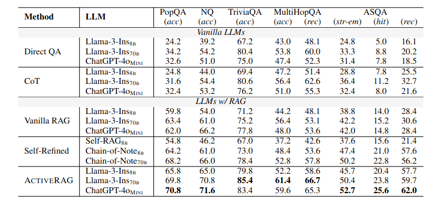
指标：准确性( acc ) 、正确性( str-em )、命中率( hit ) 和召回率( rec )
1.有效地减轻了噪声检索文档的负面影响，并提高了其正确回答问题的自我一致性。
2.代理需要LLMs 进行三次推理才能生成最终答案，代理额外的时间和费用成本。
GraphRAG
原文：https://arxiv.org/abs/2404.16130 https://github.com/microsoft/graphrag
概念
GraphRAG 通过引入知识图谱，从预先构建的图数据库中检索与给定查询相关且包含关系知识的图元素，来增进语言模型的上下文理解。
解决以下问题：
忽视关系：实际上，文本内容并非孤立存在，而是相互关联的。传统的 RAG 无法捕获仅靠语义相似性无法呈现的重要结构化关系知识。比如，在通过引用关系连接论文的引用网络中，传统的 RAG 方法侧重于依据查询找到相关论文，却忽略了论文之间重要的引用关系。
冗余信息：RAG 在连接成提示时，常以文本片段的形式重复内容，致使上下文过长，陷入“Lost in the Middle”的困境。
缺乏全局信息：RAG 只能检索文档的子集，无法全面掌握全局信息，因而在诸如查询聚焦摘要（Query-Focused Summarization，QFS）等任务中表现不佳。
比如，依赖一个企业知识库，我们提问：XX产品的价格是多少？对于这样一个具体的显式搜索的任务，我们很容易地从某个文档片段中匹配到答案。这是普通的RAG所擅长的。
但是对于这样的问题：去年研发中心团队取得的成果？这种宏观的问题，我们就需要把企业知识库里面和研发中心有关联的项目以及成就找出来，进行总结归纳，然后给出答案。这种问题传统的RAG解决起来效果不会太好。
GraphRAG 流程
GraphRAG 与其他 RAG 应用的模式基本相同，只是在开始时增加了一个“Create Graph-构建图”的步骤。
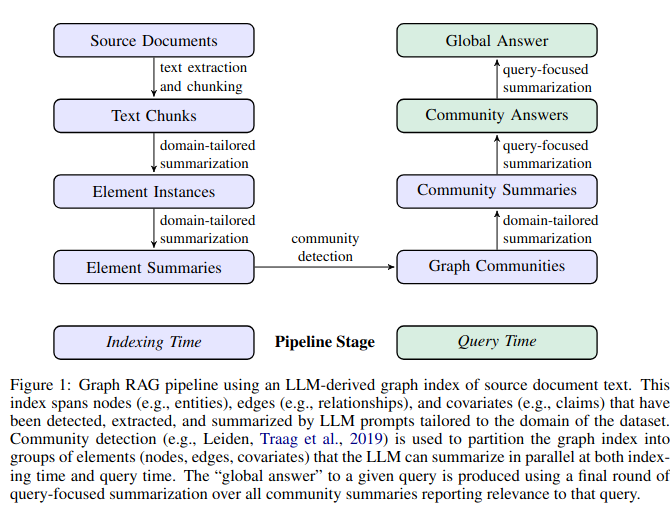
- 源文件->文本块：将输入文本进行切割，拆分成较小的文本片段。
- 文本块->元素实例：通过LLM从每个源文本块中识别并提取图形节点和边的实例。然后明确相关实体之间的所有关系。（LLM参与）
- 元素实例->元素摘要：将每个提取的元素实例生成独立的摘要，这些摘要提供了每个元素的独立描述。（LLM参与）
- 元素摘要->图社区：通过社区检测算法，将图划分为多个社区，每个社区包含彼此之间关系密切的节点和边。
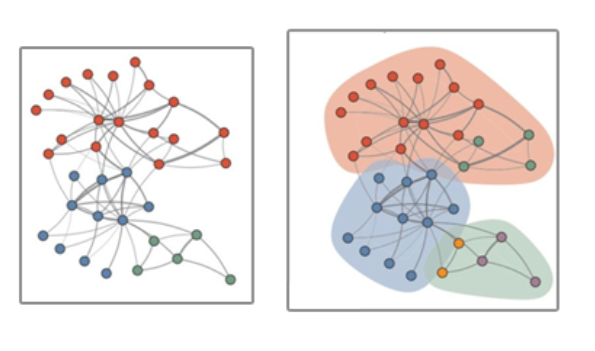
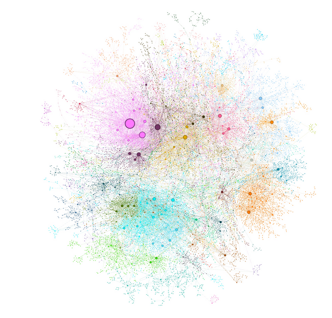
圆圈表示实体节点，其大小与其度数成正比。节点颜色代表实体社区。
- 图社区->社区摘要：为每个社区生成一个综合的摘要，描述该社区内所有元素及其关系。这些摘要可以在查询时独立使用。（LLM参与）
- 社区摘要->社区回答->全局回答：在接到用户查询后，系统会利用这些社区摘要来生成部分回答。每个社区摘要独立处理，并生成与查询相关的答案。最终，将所有社区回答汇总生成一个综合性的全局回答，来满足用户的查询需求。（LLM参与）
社区的概念：社区是指一组紧密相连的节点。这些节点之间有大量的边连接，形成了一个相对独立的子图。社区检测有助于发现知识图谱中的结构化信息，识别出不同的主题或领域。
节点度数：是指在一个图中，与某个节点直接相连的边的数量。
实验数据和对比
Graph RAG VS Naive RAG 以及 LLM 生成的评估
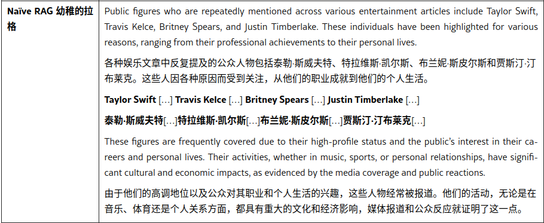
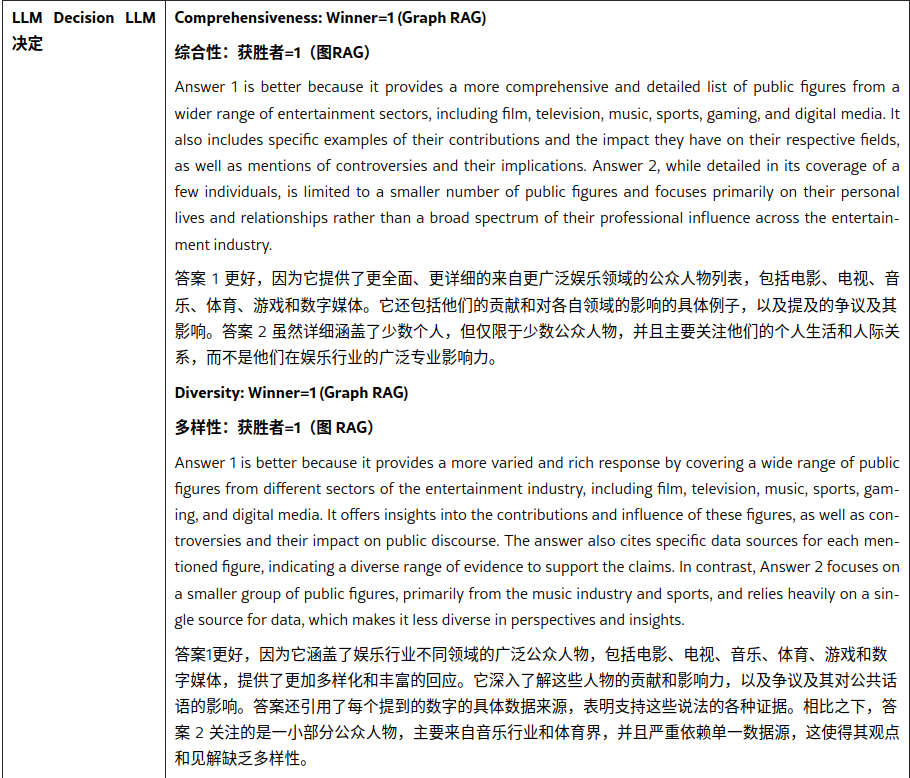
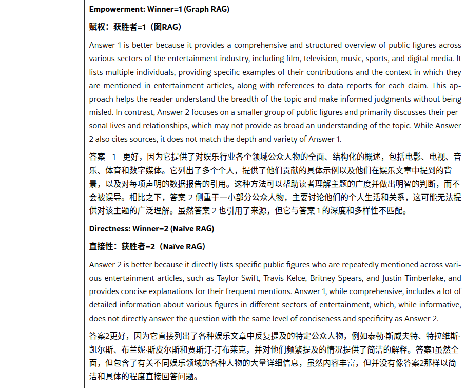
指标：
- Comprehensiveness：全面性。答案提供了多少细节来涵盖问题的所有方面和细节？
- Diversity：多样性。对问题提供不同观点和见解的答案有多多样化和丰富？
- Empowerment：增强。答案如何帮助读者理解该主题并做出明智的判断？
- Directness：直接。答案对问题的回答有多具体和清晰？
特点和应用场景
- 复杂关系数据或跨领域知识集成，当数据库中包含大量相互关联的实体，需要整合不同领域的信息并建立联系时，如社交网络、组织结构等数据，或跨学科研究、综合情报分析等任务，可尝试使用GraphRAG。
- 需要多步推理或跨越多个关系的查询，如寻找间接关系或因果链分析的相关应用。
- 受限于传统向量搜索能力，或者改进RAG方法后仍然效果不佳时。
- 知识图谱的构建对LLM要求很高，中间多个环节需要LLM的参与，对于成本也是一个需要考量的点。图构建的复杂性、大规模图的性能问题、以及对专业知识的要求更高。当有新数据时对知识图谱的更新也需要很大的计算量和工作。这些本身就是图谱领域的难点。
- GraphRAG 并非万能，在传统 RAG 效果良好时，贸然改用 GraphRAG 并不可取。在实际应用阶段，还需要从数据、性能、工程实现复杂度等多方面权衡，最终确定是否使用 GraphRAG。
LightRAG
原文：https://arxiv.org/abs/2410.05779 https://github.com/HKUDS/LightRAG
LightRAG，一种将基于图的文本索引与双层检索框架无缝集成的框架。
与 GraphRAG 类似，不同的是 LightRAG 检索机制依赖于基于向量的搜索，没有社区的构建。但不是像传统 RAG 那样检索块，而是专注于检索实体和关系。与 GraphRAG 中使用的基于社区的遍历方法相比，这种方法显着减少了检索开销。
图结构与矢量表示的集成有助于有效检索相关实体及其关系，显着缩短响应时间，同时保持上下文相关性。
双级检索：低级检索侧重于有关特定实体及其关系的精确信息，高级检索涵盖更广泛的主题和主题。
LightRAG 架构
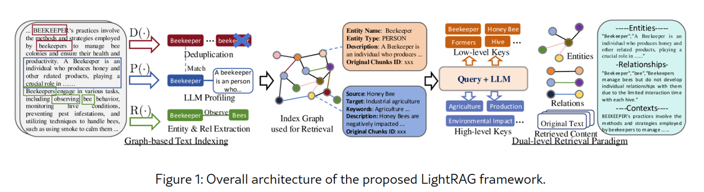
1.基于图的文本索引
图实体和关系的提取。包含：文本分割、通过LLM识别和提取各种实体以及它们之间的关系R(⋅)、LLM生成键值对P(⋅)、图谱去重D(⋅)。
两个关键提升：
- 新数据的无缝集成：通过对新信息应用一致的方法，增量更新模块允许 LightRAG 集成新的外部数据库，而不会破坏现有的图形结构。这种方法保留了已建立连接的完整性，确保历史数据仍然可访问，同时丰富图表而不会发生冲突或冗余。
- 减少计算开销。通过消除重建整个索引图的需要，该方法减少了计算开销并有利于新数据的快速同化。因此，LightRAG 可以保持系统准确性、提供最新信息并节省资源，确保用户及时收到更新并提高 RAG 的整体有效性。 2.双层检索范式
- 微观查询（Specific Queries）：面向具体细节的，引用图中的特定实体，需要精确检索与特定节点或边相关的信息。例如，一个特定的查询可能是，“谁写了《傲慢与偏见》？”
- 抽象查询（Abstract Queries）：抽象查询更具概念性，涵盖更广泛的主题、摘要或总体主题，不直接与特定实体相关。抽象查询的一个示例是，“人工智能如何影响现代教育？”
基于不同的查询类型，LightRAG 在双层检索范式中采用了两种不同的检索策略。确保了特定和抽象的查询都得到有效处理。
- 低级检索：侧重于检索特定实体及其相关属性或关系。此级别的查询是面向细节的，提取关于图中特定节点或边的精确信息。
- 高级检索：处理更广泛的主题和总体主题。聚合跨多个相关实体和关系的信息，提供对更高级概念和摘要的洞察，而不是特定细节。
图与向量相结合的检索
通过将图结构与向量表示相结合，使检索算法能够有效地利用本地和全局关键字，简化搜索过程并提高结果的相关性。
- 查询关键字提取：对于给定的查询，LightRAG 首先提取本地查询关键字和全局查询关键字。
- 关键字匹配：使用向量数据库将本地查询关键字与候选实体进行匹配，并将全局查询关键字与链接到全局键的关系进行匹配。
- 整合高阶关联性：为了提升查询的高阶关联性，LightRAG不仅检索图元素，还扩展至这些元素所在局部子图的邻近节点。
3.答案生成
检索信息的利用：利用检索到的信息通过LLM 根据收集的数据生成答案。收集到的数据包括由相关实体和关系，包括名称、实体和关系的描述以及原始文本的摘录。
上下文整合和答案生成：将查询与这个多源文本统一，LLM 生成根据用户需求定制的信息丰富的答案，确保与查询的意图一致。
实验结果
与其他RAG比较：
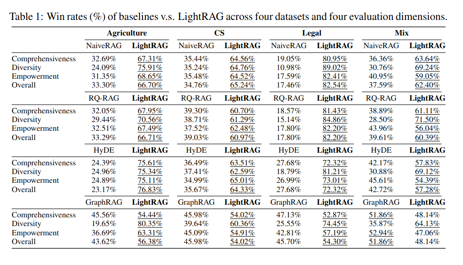
Comprehensiveness 全面性：答案是否彻底地解决了问题的所有方面和细节？
Diversity 多样性：在提供与问题相关的不同观点和见解时，答案的多样性和丰富程度如何？
Empowerment 增强：答案如何有效地帮助读者理解主题并做出明智的判断？
Overall 总体：此维度评估上述三个标准的累积表现，以确定最佳总体答案。
成本：
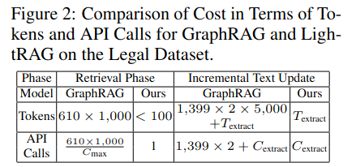
T(extract)表示实体和关系提取的令牌开销，C(max)表示每个 API 调用允许的最大令牌数，C(extract)表示提取所需的API调用次数。
DR-RAG
概述
原文：https://arxiv.org/abs/2406.07348
https://mp.weixin.qq.com/s/bu9Zqvyd7MsGQAWuxTEcYw
https://zhuanlan.zhihu.com/p/707060919
Dynamic-Relevant Retrieval-Augmented Generation (DR-RAG) 动态相关检索增强生成。针对普通RAG单词查询难以检索所有相关文档，本文介绍了一种两阶段检索框架，它能获取一些看似和查询关联度低但是对答案生成非常关键的文档，旨在提升文档检索的召回率和答案准确性，同时保持高效。
举例
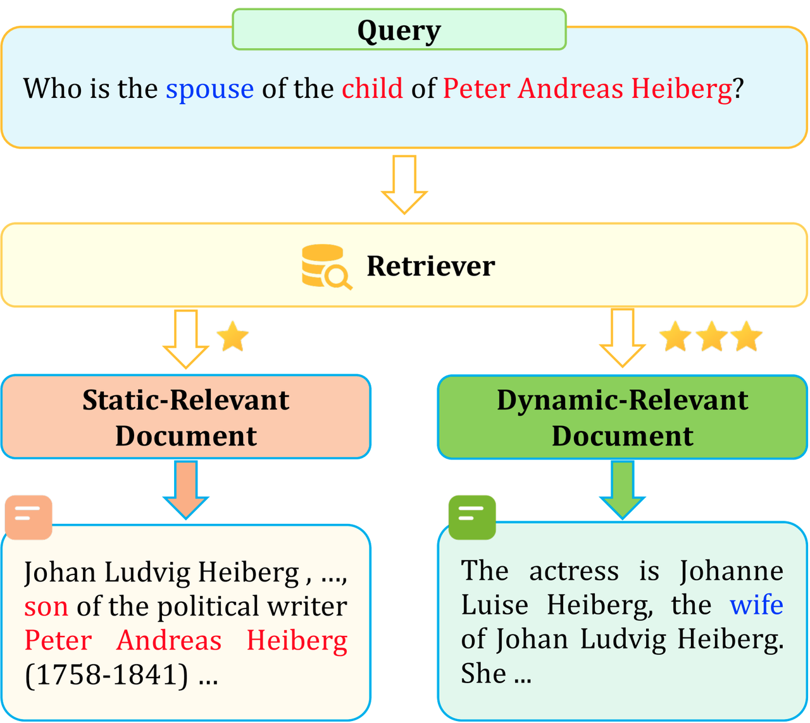
这个问题查询：谁是彼得·安德烈亚斯·海伯格孩子的妻子？
这需要两个最相关的文档才能获取到答案。
对于红色的信息，由于和问题高度相关，传统检索器能够轻松地获取，我们称之为静态相关文档。
而蓝色的信息，和查询相关度不高，但是对于生成问题的答案却很关键，传统检索器很难获取，我们称之为动态相关文档。另外如果文档中有很多包含“配偶/妻子”的信息，也会导致相关文档在检索中排名较低。
传统解决办法：提高K值，检索更多文档，但召回率提高有限，而且给LLM增加了很多冗余信息。
什么是DR-RAG
1.使用相似性搜索算法，基于 Query 找到相似度较高的静态相关文档（SR-Documents）。
2.将第一步中获得的 SR-Documents 和 Query 结合，以此找出 DR-documents。
3.将第二步获得的 DR-documents 作为输入传递给分类器（classifier），让 classifier 找出最合适的 DR-documents。
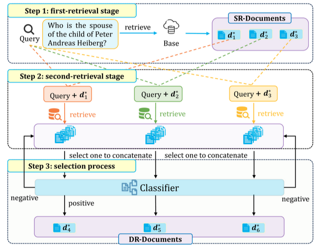
查询文档串联(Query Documents Concatenation) 方法方法旨在利用句子来匹配更多有用和相关的信息。
经过第一次检索后，得到k1个静态文档，然后将Query和静态文档串联，得到多个多个<𝒒,𝒅𝒊,i∈k1>对，然后查找动态文档。
将Query、静态文档和动态文档串联给LLM。
QDC方法显著提高了文档召回率和答案准确性。
算法演示整个过程：
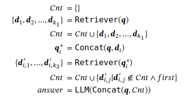
Cnt 代表的是静态文件和动态文件的合集。
Cnt=Cnt∪{𝒅i,j′∣𝒅i,j′∉Cnt∧first} 表示对一个𝒅′，在第二检索阶段中，只有在第一次检索到时放入，应该是防止重复。
分类器
整个流程分类器的实现是关键，因为QDC提高了召回率和准确性，但是如果仅仅是把动态文档和静态文档的集合交给LLM，那么会存在太多冗余信息，如果可以判断第二个阶段的文件是否有效，这将会增加LLM生成答案的质量和准确性。
文章中介绍了两种分类器策略：
- Classifier Inverse Selection（逆选择分类器）
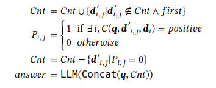
- Classifier Forward Selection（前向选择分类器）
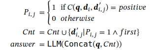
第二种分类器：将一个动态文档和所有静态文档结合后，当分类器都输出不相关时，将这个动态文档删除。
第二种分类器：将第一阶段的静态文档和动态文档结合输入到分类器，找到第一个相关的文档后加入到集合。
具体分类器如何实现，文中没有介绍，可以基于一个参数相对较少的小模型来实现。
结论
DR-RAG 仅一次调用 LLMs，大幅提升了实验效率，DR-RAG 显著提高了答案的准确性
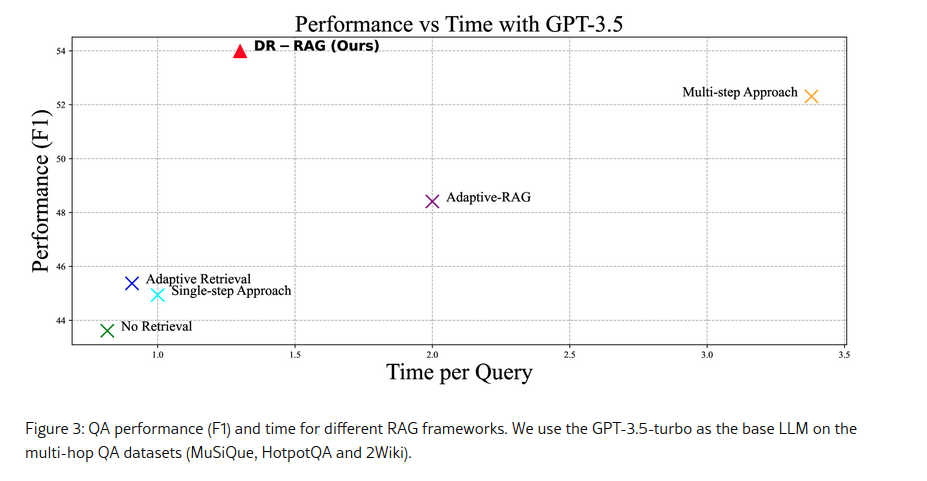
Adaptive-RAG
原文：https://arxiv.org/abs/2403.14403 https://github.com/starsuzi/Adaptive-RAG https://mp.weixin.qq.com/s/XlgZhTlbxtZlBIqG1RBntA
Self-RAG
原文：https://arxiv.org/abs/2310.11511 https://selfrag.github.io/ https://github.com/AkariAsai/self-rag selfrag_llama2_13b：https://huggingface.co/selfrag/selfrag_llama2_13b selfrag_llama2_7b：https://huggingface.co/selfrag/selfrag_llama2_7b
Chain-of-Note
原文：https://arxiv.org/abs/2311.09210 https://zhuanlan.zhihu.com/p/671900216